반딧불이 / 2017
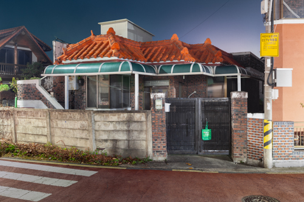
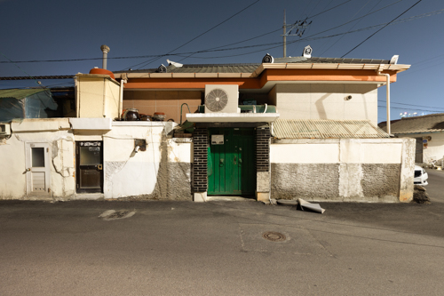
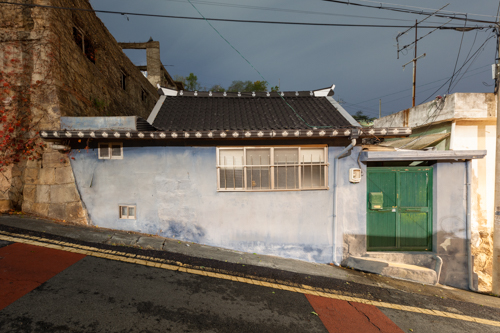
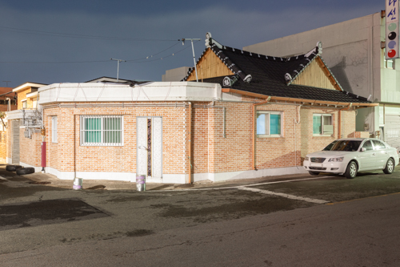
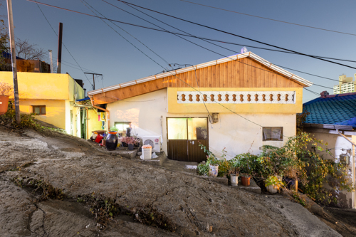
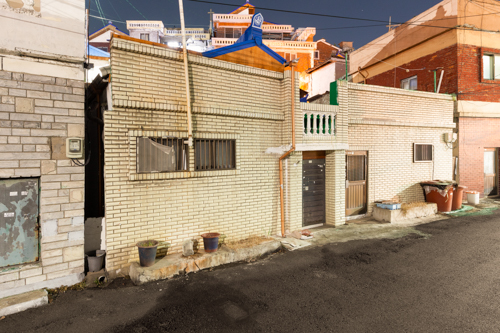
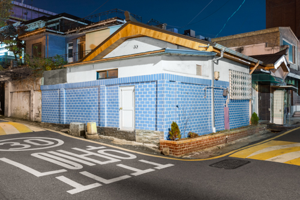
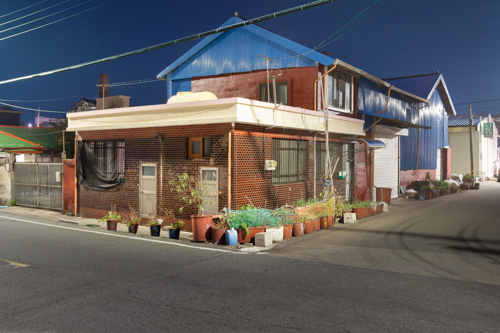
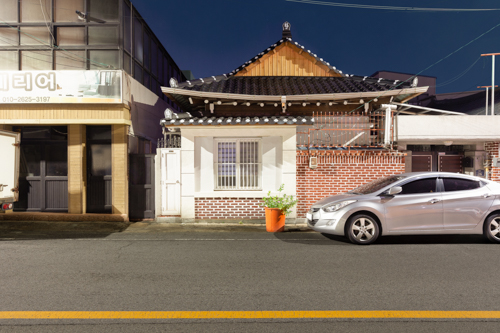
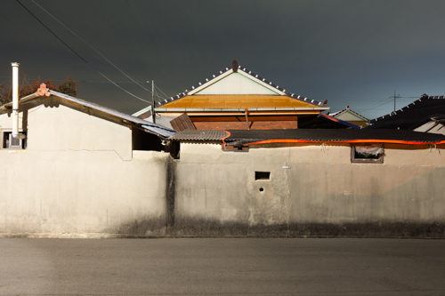
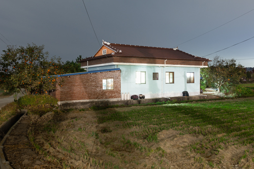
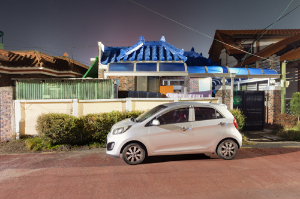
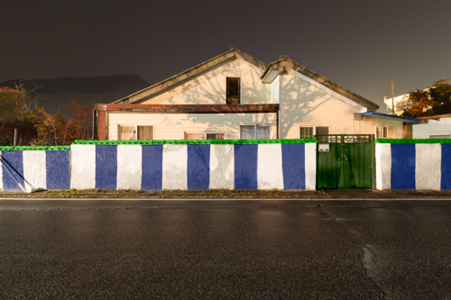
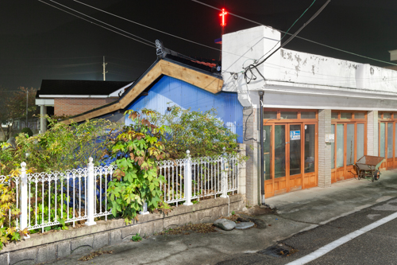
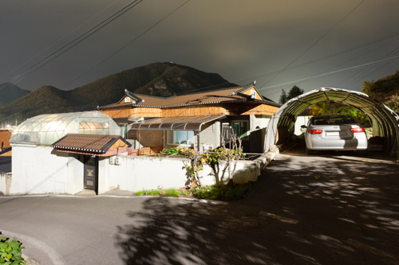

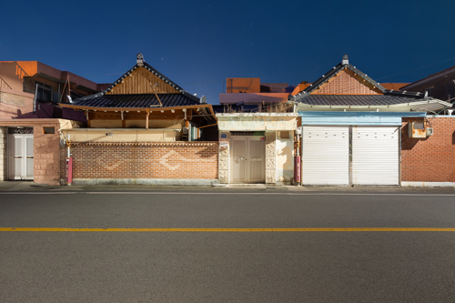
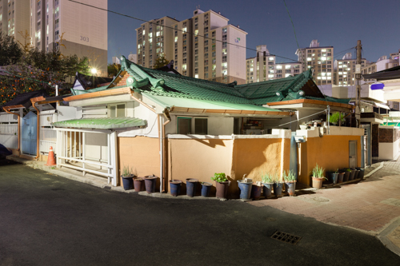
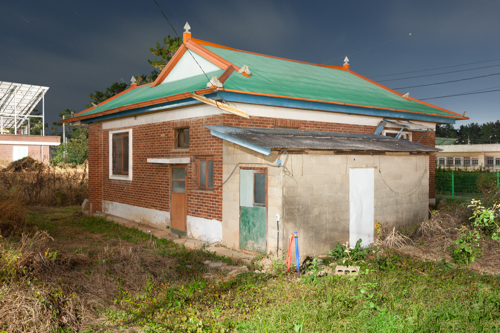
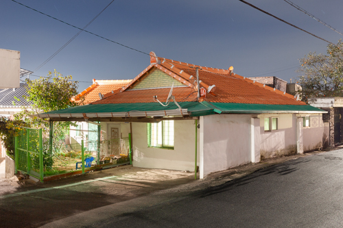
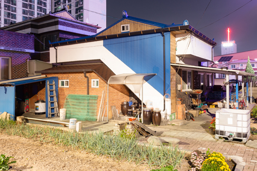
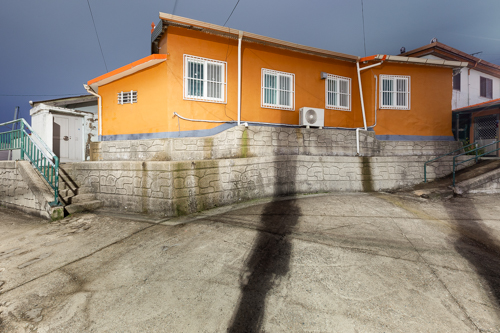
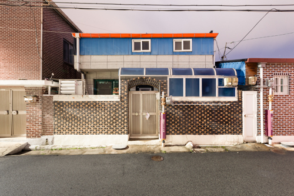
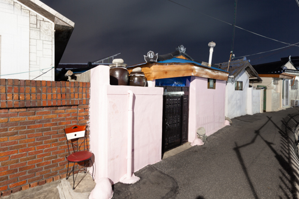
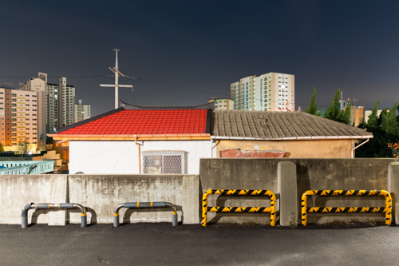
산길에서 낯선 곤충을 한 마리 보았다. 배가 불룩한 게 왠지 독하게 생겨서 다행히도 만질 엄두가 나지 않았다.
알아보니 잘못 만지면 물집이 생기고 흉터가 남는다고 했다. 외래종이라 생각했는데 토종이라고 한다.
중국산 뻘건 매미가 한창 날아들 때의 낯섦을 느꼈다.
반딧불이는 지금까지 두 번 보았다. 아주 어릴 적 시골의 천변에 낚시를 따라갔던 때,
있는 힘껏 불을 켜는듯 달아올랐다 가라앉았다. 신기했는지 생생한 기억으로 남아있다. 또 한번은 민통선 산골짜기에서 경계근무 중이었다.
이곳에는 수두룩한 줄 알고 지나쳤는데 그 이후로 볼 수 없었다.
도시로부터 멀리 살아서 눈에 잘 띄지 않는다고 하지만 세계적으로 흔한 곤충이라고 한다.
그럼에도 나는 반딧불이가 어떻게 생겼는지 알아볼 수 없다. 그저 빛이 나서 안다.
가끔 지나는 길에, 못 보던 건물이 들어섰다. 필로티 구조에 각이 지고, 껍데기는 짙은 회색 빛으로 깨질 듯이 반질반질하다.
익숙한 일이다. 갑작스러운 것도, 건너 편의 것과 똑같이 생긴 것도, 때로 극성을 부리는 듯한 것도 그렇다.
위치가 다르지 않다면 분간할 수 있을까. 더 이상 옛날 ‘빨간 대문 집’과 같은 특별함으로 구분되지 않는다.
어딘가 붙어있는 건물의 이름으로 가름한다.
오랜된 주택은 살아있는 듯 보일 때가 있다. 모두 제각기 얼굴을 가진 것처럼 독립적이다. 환경에 적응하고 반응하며 증식하고 의태한다. 때로는 탈피를 하듯 확장한다. 셀 수 없이 많아서, 또 오래된 것이라서 익숙하지만 생태를 알 수가 없다. 그저 빛이 나서 안다.
특히 흥미로운 점은 기와 형태의 지붕을 이용하는 경우이다. 아마도 살아남기 위한 위장 같은 것, 낯선 토종이 되기 위한 그들의 방식이다.
- 없음
참여한 전시
- 2009 《충무로》